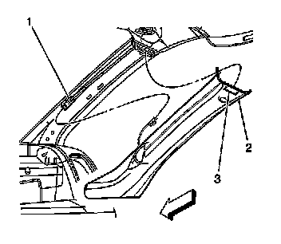
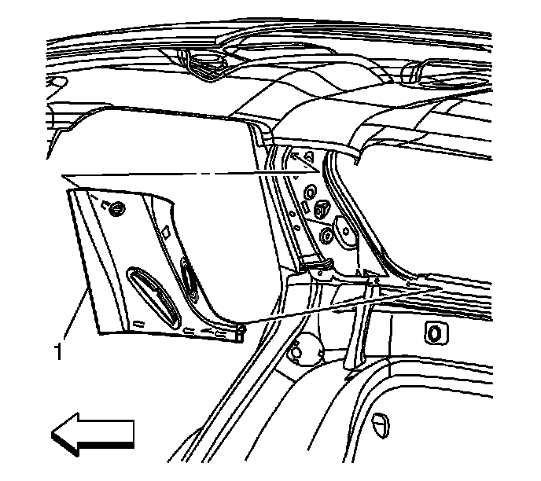
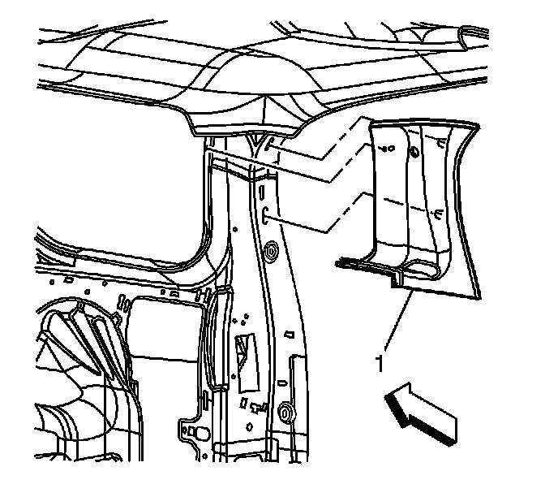
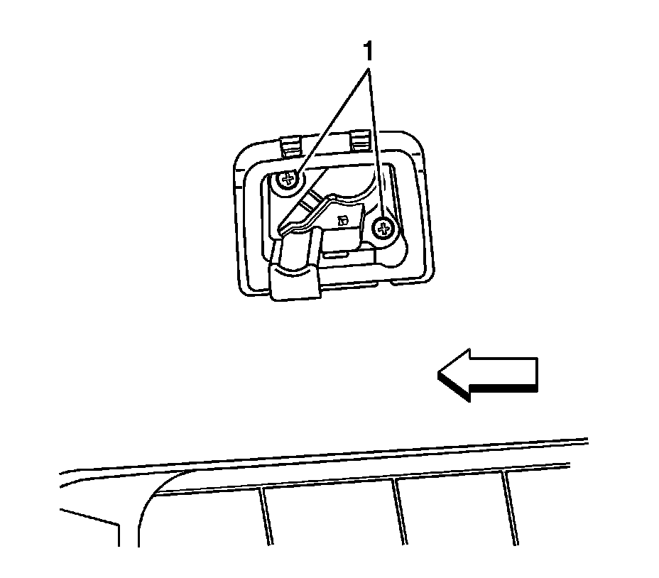
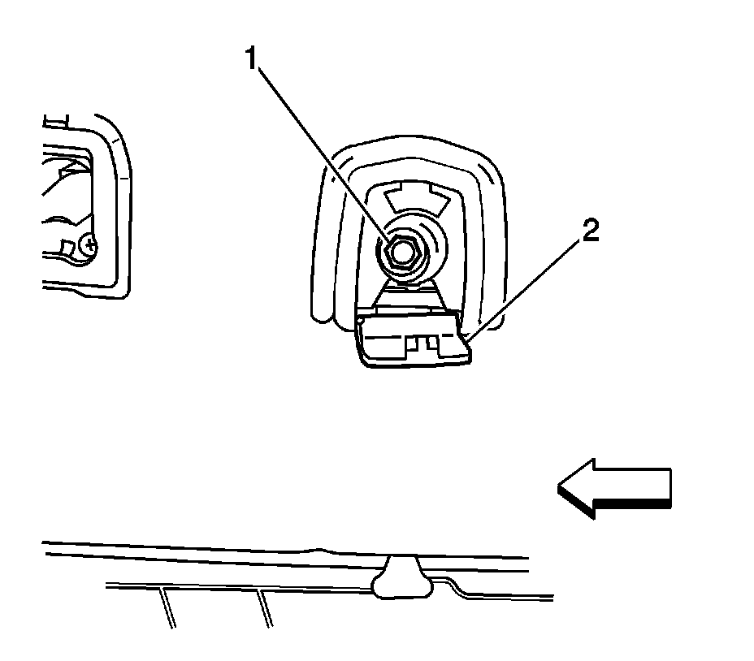
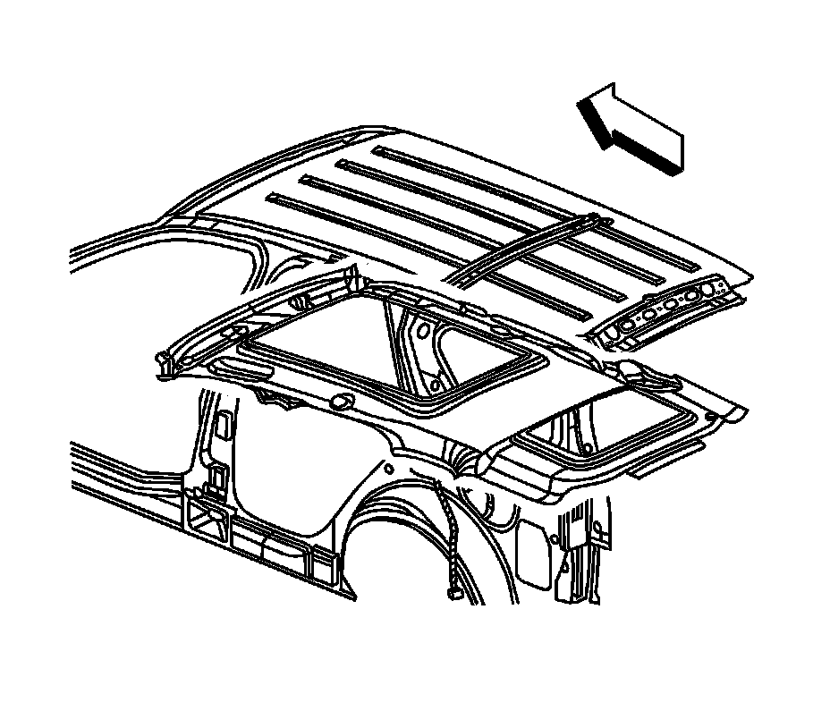
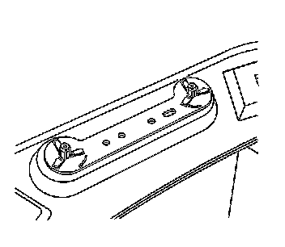

Headliner: Service and Repair
Headlining Trim Panel Replacement
Caution: If the energy absorbing foam breaks while you are removing or installing the headliner, use a NEW headliner. If you do not replace the damaged headliner, future personal injury is possible.
Caution: Do not attempt to repair or alter the head impact energy-absorbing material glued to the headliner or to the garnish trims. If the material is damaged, replace the headliner and/or the garnish trim. Failure to do so could result in personal injury.
Notice: Use care when working around the head curtain inflator module. Sharp tools may puncture the curtain airbag. If the head curtain inflator module is damaged in any way, it must be replaced.
Notice: If a vehicle is equipped with a head curtain inflator module ensure that the inflator module and tether are undamaged. If tether or curtain airbag are damaged in any way, they must be replaced.
Removal Procedure
Caution: In order to prevent SIR deployment, personal injury, or unnecessary SIR system repairs, do not strike the door or the door pillar in the area of the side impact sensor (SIS). Turn OFF the ignition and remove the key when performing service in the area of the SIS.
Caution: Refer to SIR Caution (SIR Caution) .
1. Disable the SIR system. Refer to SIR Disabling and Enabling (Service and Repair) .

2. Remove the windshield pillar garnish moldings (2). Refer to Windshield Pillar Garnish Molding Replacement (Service and Repair) .
3. Remove the front assist handles. Refer to Front Assist Handle Replacement (Service and Repair) .
4. Recline the front seats.

5. Remove the center pillar garnish moldings (2). Refer to Center Pillar Garnish Molding Replacement (Service and Repair) .
6. Lower the rear seat No 1.

7. Remove the side door opening frame garnish moldings (1). Refer to Side Door Opening Frame Garnish Molding Replacement (Service and Repair) .

8. Remove the body side upper garnish moldings (1). Refer to Body Side Rear Upper Garnish Molding Replacement (w/TB5) (Service and Repair)Body Side Rear Upper Garnish Molding Replacement (w/o TB5) (Service and Repair) .
9. Lower the rear seat No 2.

10. Remove the cargo tie down bezels fasteners (1).

11. Remove the coat hook fasteners (1).

12. Remove the overhead console (1). Refer to Roof Console Replacement (Service and Repair) .
13. Remove the sunshades. Refer to Sunshade Replacement (Service and Repair) .

Important: The sunshades are secured to the headliner with a 2-piece retainer clip/spacer (2).
14. Ensure that the 3 screws on each side are retrieved as the headliner is lowered.
Important: Note the size and location of the retainers for installation.
15. Remove the fasteners for the sunshade rod retainers.
16. Remove the sunshade rod retainers.
17. Disconnect the mirror connector.
18. Remove the cargo lamp. Refer to Cargo Lamp Replacement (Cargo Lamp Replacement) .
19. Remove the dome lamp. Refer to Dome Lamp Replacement (Dome Lamp Replacement) .
20. Disconnect the antenna module. Refer to Radio Antenna Module Replacement (Radio Antenna Module Replacement) .
21. Disconnect the radio control module.
22. Remove the right side sound insulator.
23. Disconnect the rear washer hose front the connector at the right side lower instrument panel compartment.
24. Disconnect the washer hose at the liftgate.
25. Pull away the exterior weatherstrips on the front window and/or rear vent window opening to the headliner.
26. Disconnect the inline electrical connectors.
Notice: Use care when removing or installing the headliner. Excessive bending will damage the headliner.

27. Lower the headliner.
28. With the aid from an assistant, remove the headliner through the lift gate opening.
Installation Procedure

1. Install the front assist handle retainers.
2. Install the assist handles and loosely install the fasteners in the integral retainer clips in order to hold the handles into position.
3. Install the sunshades to the headliner.
Important: The electrical harness is placed between the headliner and the plastic retainer clip.
4. Position the electrical harness between the headliner and retainer clip.
5. Install the metal retainer ring (2).
6. Loosely install the fasteners.
7. Connect the electrical connectors (1).

8. Install the sunshade rod retainers.
9. Install the overhead console to the headliner.
10. On the right side, install the bolt through the sunshade rod retainer and through the overhead console bracket.
11. Position the ground strap (1) onto the bolt (2).
12. Install the metal retainer clip over the bolt in order to hold the ground strap into position.
13. Install the left sunshade rod retainer.
14. Loosely install the fastener.
15. With the aid from an assistant, position the headliner to the roof.
16. Install the overhead console (1). Refer to Roof Console Replacement (Service and Repair) .
Notice: Refer to Fastener Notice (Fastener Notice) .
17. Secure both front assist handles in order to hold the headliner in place.
Tighten the assist handle screws to 2 N.m (18 lb in).
18. Install the assist handle bezel covers.
19. Install the dome lamp. Refer to Dome Lamp Replacement (Dome Lamp Replacement) .
20. Install the cargo lamp. Refer to Cargo Lamp Replacement (Cargo Lamp Replacement) .
21. Secure both sunshades.
Tighten the outer sunshade bezel fasteners to 2 N.m (18 lb in).
22. Secure the right side sunshade rod retainer.
Tighten the right side to 10 N.m (89 lb in).
23. Secure the left side sunshade rod retainer.
Tighten the left side to 2 N.m (18 lb in).
24. Position the sunshades to the headliner.
25. Connect the connector lead for the antenna module. to the rear window. Refer to Radio Antenna Module Replacement (Radio Antenna Module Replacement) .
26. Install the coat hook fastener (2).
Tighten the fastener to 10 N.m (89 lb in).
27. Install the cargo tie down bezel (1).
Tighten the fasteners to 2 N.m (18 lb in).
28. Install the body side rear upper garnish molding (1). Refer to Body Side Rear Upper Garnish Molding Replacement (w/TB5) (Service and Repair)Body Side Rear Upper Garnish Molding Replacement (w/o TB5) (Service and Repair) .
29. Install the side door opening frame garnish molding (1). Refer to Side Door Opening Frame Garnish Molding Replacement (Service and Repair) .
30. Install the center pillar garnish moldings (2, 3). Refer to Center Pillar Garnish Molding Replacement (Service and Repair) .
31. Connect the rear washer front hose connection at the lower right side of the instrument panel.
32. Install the right side sound insulator.
33. Install the windshield pillar garnish moldings (2). Refer to Windshield Pillar Garnish Molding Replacement (Service and Repair) .
34. Reposition the sunroof front window and/or rear vent window finish lace around the opening in the headliner.
35. Enable the SIR system. Refer to SIR Disabling and Enabling (Service and Repair) .